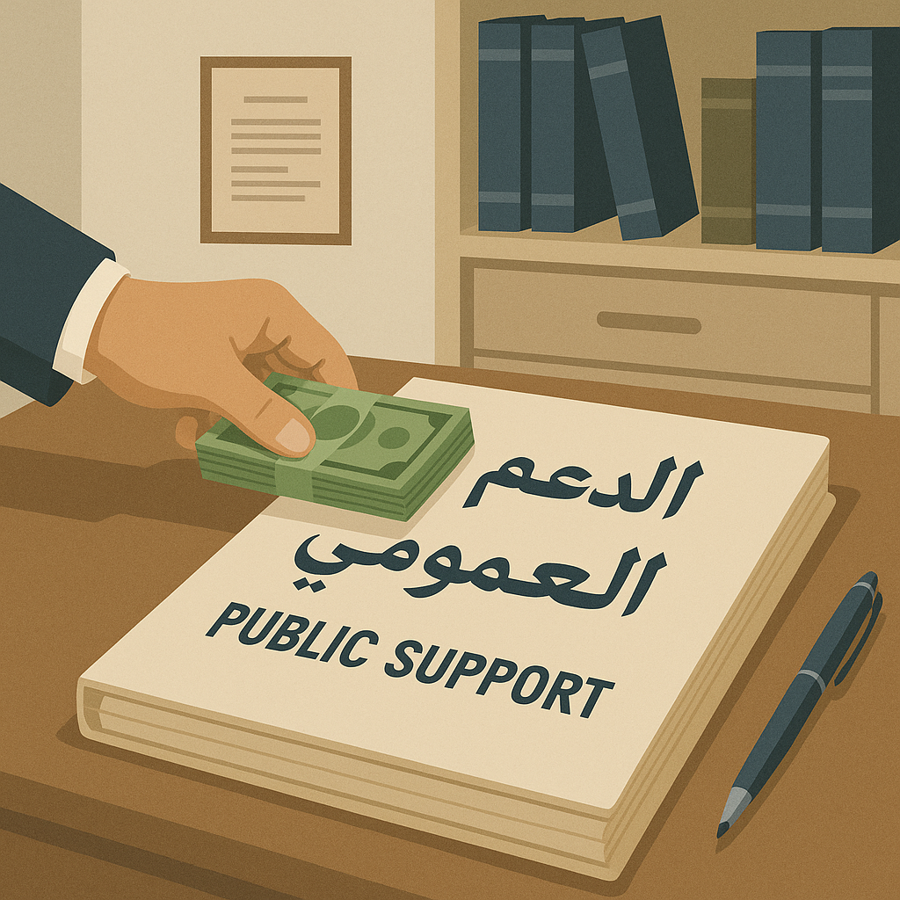

يشكل الدعم العمومي للأنشطة الثقافية إحدى الركائز الأساسية للسياسة الثقافية بالمغرب، وذلك في إطار سعي الدولة إلى النهوض بالمشهد الفني وتعزيز دور الثقافة كقاطرة للتنمية البشرية والاجتماعية. وقد أسست وزارة الشباب والثقافة والتواصل – قطاع الثقافة، مسطرة خاصة لدعم المشاريع الثقافية والفنية، تهدف من خلالها إلى تشجيع الإبداع وتيسير ولوج الفاعلين الثقافيين إلى مصادر التمويل العمومي، بما يضمن استمرارية المبادرات الفنية وتنوعها في مختلف جهات المملكة.
تنبع أهمية هذه المسطرة من كونها تترجم التزامات المغرب الدستورية، خاصة تلك المرتبطة بالحق في الثقافة والولوج إليها، كما تؤسس لمقاربة جديدة قوامها العدالة الثقافية، من خلال تمكين الجمعيات والمؤسسات الثقافية والفنانين من تقديم مشاريعهم للاستفادة من الدعم المالي. وتشمل المشاريع المؤهلة قطاعات متعددة كالموسيقى، والمسرح، والفنون التشكيلية، والسينما، والكتاب، والتراث.
وتقوم مسطرة الدعم على سلسلة من المراحل المنظّمة، تبدأ بإعلان سنوي تصدره الوزارة يحدد شروط الترشح والمجالات المعنية، ثم تقديم ملفات الترشيح إما بصيغة رقمية عبر منصة إلكترونية مخصصة أو ورقيًا، يتضمن الملف الوثائق القانونية والفنية الخاصة بالمشروع وصاحبه. بعد ذلك، تُعهد دراسة الطلبات إلى لجان متخصصة تتكون من فنانين وخبراء في المجال، تقوم بانتقاء المشاريع بناء على معايير محددة من قبيل الجودة، الأثر المجتمعي، والجدوى الاقتصادية، ليُعلن لاحقًا عن نتائج الدعم والمبالغ الممنوحة. وتُستكمل العملية بتوقيع اتفاقيات الشراكة وصرف الدعم، على أن يلتزم المستفيدون بإعداد تقارير ختامية مفصلة حول تنفيذ المشاريع.
ورغم الطابع التنظيمي لهذه المسطرة، إلا أن الممارسة الواقعية تكشف عن عدد من الإكراهات التي تحد من فعاليتها، من بينها تأخر صرف مبالغ الدعم، وضعف المواكبة التقنية للمشاريع، فضلاً عن غياب العدالة المجالية في توزيع الدعم بين الجهات، حيث تتركز أغلب المشاريع المدعمة في المدن الكبرى. كما أن الرقمنة الكاملة لمسار الدعم لا تزال محدودة، ما يجعل الإجراءات معقدة بالنسبة للفاعلين في المناطق الهشة أو الأقل استفادة من التكوين.
ولمواجهة هذه التحديات، تبرز الحاجة إلى إعمال إصلاحات عملية تشمل تعزيز الشفافية، وإرساء معايير موضوعية لقياس الأثر الثقافي والاجتماعي للمشاريع، إضافة إلى توفير التكوين والمواكبة للمستفيدين، وتوسيع رقعة الاستفادة لتشمل الجهات المهمشة والمجالات الفنية الجديدة، خاصة المرتبطة بالرقمنة والمحتوى الإبداعي الرقمي. كما أن رقمنة جميع مراحل المسطرة، وتوفير منصات تفاعلية تقدم شروحًا مبسطة وإجابات فورية عن تساؤلات المتقدمين، من شأنها أن تجعل هذا الدعم أكثر نجاعة وفعالية.
إن الرهان الحقيقي للدعم العمومي في المجال الثقافي لا يقتصر فقط على صرف المبالغ المالية، بل يكمن في خلق مناخ إبداعي متكامل يتيح للفنانين والمبدعين تطوير مشاريعهم ضمن بيئة قانونية ومؤسساتية محفزة، ويعزز من حضور الثقافة كحق أساسي ومكوّن استراتيجي في بناء مغرب منفتح ومبتكر.